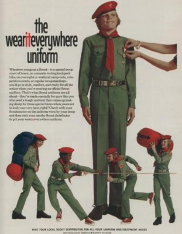
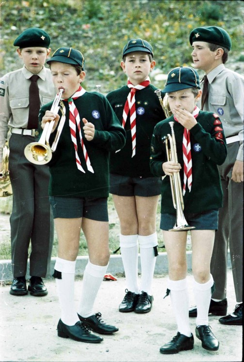

In 1909, when William Boyce got lost in England, a boy helped him to him destination and refused payment. When he found out about the programme, he went home and in 1910, started the Boy Scouts of America. This section dives into the specific developments of scouting in each decade and includes a section on Scouting Canada.

A Comprehensive History and Troop 336 Website
1920s

After the First world war, scouting expanded even further worldwide, with the first World Scout Jamboree occurring in 1920. As this was happening, many of Scouting’s current High Adventure programmes were being developed. Sea Scout commander Richard Byrd along with scout Paul Siple took an 18-month journey to Antarctica, which later developed into a tradition that is now the BSA Antarctic Scientific Programme. The Northern Tier National High Adventure Bases started in Minnesota in 1923. In the 20s was heavily invested in social justice, reaching out to young African Americans, Hispanics, Native Americans, and Japanese. Because of their role in social justice, especially for their service towards Catholics, Jews, and African Americans, the Boy Scouts of America were repeatedly attacked by the white-protestant supremacist-racist group called Ku Klux Klan.
1930s

In the 1930s, a new division of BSA developed, the Cub Scouts. Founded in 1930, the Cub Scouts focussed on teaching essential scouting skills to young boys not old enough to be Boy Scouts yet. In 1935, the Boy Scouts created a programme for their increasing number of scouts @aging out,@ The Explorers [programme, which allowed older scouts (18 or over) to continue their service and exploration. In 1938, the land that would become Philmont Scout Ranch, one of the most well-known and well-respected High Adventure programmes. The Boy Scouts also played an important role in gathering and distributing goods during the Great Depression that rippled through the United States in the 1930s. The first National Jamboree occurred in 1937 in Washington D.C. and was attended by Franklin Delano Roosevelt, the president at the time, who commended the organization.
1940s

Much like World War I had influenced the BSA, so did the Second World War. During the war, scouts hopped into action, evacuating citizens, tending to kitchens, manning First Aid stations, and manually operating 58 air-raid sirens around the island. In 1942, in conjunction with the United States Air Corps, Air Scouting was developed for boys 15 and up. Much like they had in the previous war, Scouts collected materials used to make weapons, this time surpassing what they had previously done. Scouts as a collective collected 590,000 TONNES of wastepaper, 210,000 tonnes of scrap metal, and enough material to create two million lifejackets! They cultivated more than ten times the amount of Victory Gardens than WWI and replanted almost two MILLION trees to replace those that were cut down in support of the war effort.
1950s

At the turn of the decade, BSA had reached over three million members in the US. Due to the Baby Boom (1945-1963), membership began to skyrocket to over 200,000 new members each year. In 1953, the Pinewood Derby was developed, in which scouts carve cars out of a block of wood and then race them down a track. Scouts quickly realized that the most aerodynamic cars would win, so they abandoned their fancy looking cars in favour of flat ones that would speed towards victory. During the 50s, over 900,000 kilos of clothing were collected for relief programmes both national and international. The scouts were also involved in massive programmes to get people out to vote through pamphlets and doorhangers.
1960s

The 60s was a time of massive development and change for the Boy Scouts. In 1960, John Fitzgerald Kennedy became the first Eagle Scout to be elected United States President. In 1969, Neil Armstrong became not only the first man to walk on the moon, but also the first Eagle Scout in space. In fact, of all twelve people who would visit the moon, only one would not be an Eagle Scout! In the 60s the BSA also developed programmes to get Scouting beyond the shiny-new suburbs and into inter-city areas that could be well serviced by the programme. In some areas, The BSA opened up Scout Centres in urban storefronts and even competed with gangs and crips for joining members!
1970s

In the 70s, due to fears that scouting was getting to distant for modern life, they overhauled the programme to put less emphasis on more traditional aspects of scouting like outdoor skills. Needless to say, the experiment was a failure and in 1978 the BSA reverted their programme back to it’s roots. A large part of Scouting in the 70s was environmental care. The BSA had always made this an important aspect of their programme, but due to the onset of Global Warming and the Earth Day movement, they initiated special programmes that promoted recycling and planting trees near water to prevent erosion from rising water levels. Under this programme, the scouts also collected over one million tonnes of litter and other garbage! During this time, the National High Adventure programme grew with the addition of a sailing programme that would develop into the Florida National High Adventure Sea Base.
1980s

In the 1980s, many minor changes were made to the programme that shaped it into the modern scouting we know today. In ’81 the National Jamboree was moved to Virginia, where the next eight consecutive jamborees would be held. Fashion designer Oscar de la Renta redesigned the Boy scout uniform in 1982, and it would remain that way for the next 26 years until 2008. In 1988, the BSA started a Good Turn programme that would end up donating over 65 million containers of food in its initial year alone! The Cub Scout programme also expanded during this era, with the creation of the Tiger Scout rank, again lowering the entry age for the scouting programme.
1990s

The 1990s saw the creation of the Venturing programme, a programme for both young men and women ages 13 to 21. After the dissolution of the USSR, the Boy Scouts helped re-establish Russia’s Scouting programme which had been outlawed during the Russian revolution. A Non-profit organization associated with BSA even rewrote their entire handbook for them up to modern code in Russian. The BSA furthered their commitment to environmental friendliness by instituting the Leave No Trace initiative, which laid down rules for not only service but keeping cleanliness and eco-friendliness in campsites and forests.
2000s - Present

At the turn of the millennium the BSA achieved their 100 millionth scout to be registered. In 2004, the BSA partnered with the Salvation Army, Habitat for Humanity, and American Red Cross to help address the major issues of poor quality of life, homelessness and inadequate access to housing, and hunger. During the summer of 2008, scouts on an outing with the Order Of The Arrow provided over 5 million dollars’ worth of labour to the U.S. Forest Service which helped the agency immensely. In 2009, a new base for the National Jamboree was created in West Virginia. That same year the 12th rendition of Lord Baden-Powell’s Scout Handbook was issued by the BSA, which included many throwbacks to the days of victory garden planting and peach pit collecting. As of 2017, the BSA programme has now become co-ed, allowing girls to be in both the Scouting and Cub Scouting programmes, where they were only previously allowed in the venturing programme.
Scouts Canada

Scouting Canada was formed just four years after the Boy Scouts of America, in 1914. According to their website, their philosophy is to "help develop well-rounded youth, better prepared for success in the world. We do this by enabling thousands of young Canadians to engage in safe, youth-led, adventurous programs in hundreds of communities across this great country." As is noticeable from their mission statement, Scouting Canada serves the same mission, only focused in Canada and with a lower enrolment rate due to the smaller population. Much like the BSA, they have a youth scouting programme, a normal scouting programme, a venturing program, and a high-adventure programme. Unlike BSA, however, Scouts Canada is controlled by a CEO and a board of directors, whereas the BSA is run by Boy Scouts, so they better understand the needs and reach of their programme.